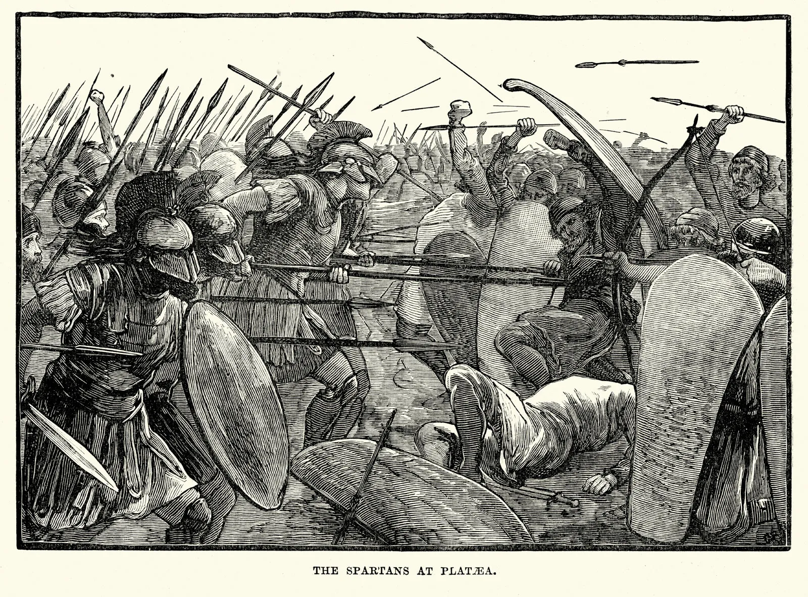

Battle of Plataea (c. 479 BCE)

Following the Greek victory at the Battle of Salamis in 480 BCE, the Persian king Xerxes I returned to Asia with much of his army. However, he left his general, Mardonius, in Greece to continue the campaign. The conflict reached a decisive moment in 479 BCE, when Greek forces defeated the remaining Persian army at the Battle of Plataea.
Although Xerxes had withdrawn, Mardonius still commanded a large army, supported by troops from several regions, including Boeotia. He established his camp near Plataea, in an area connected to Thebes, which supported Persia. The Greek alliance gathered nearby under the leadership of the Spartan commander Pausanias, with soldiers from several city-states preparing to defend Greece against the Persian forces.
Initially, neither side wanted to risk a full-scale attack. However, Persian cavalry began disrupting Greek supply routes and blocking access to important water sources. This placed the Greeks in a difficult position, forcing Pausanias to move his army during the night to find a more suitable location near the Asopos River. The movement did not go according to plan, and by morning the Greek troops had become spread out and disorganised.
Mardonius saw an opportunity and ordered his forces to attack. Despite the confusion, the Greek soldiers fought back effectively. Their heavily armed infantry, known as hoplites, proved particularly effective in close combat. The Spartans played a major role in the fighting, and Mardonius was killed during the battle. Without their commander, the Persian forces lost their organisation and retreated, suffering heavy casualties.
The Greek victory at Plataea was one of the most important events of the Greco-Persian Wars. The surviving Persian forces withdrew northwards, and Persia never again launched a major invasion of mainland Greece. Although fighting between the Greeks and Persians continued in other regions for many years, the battle secured the independence of the Greek city-states and marked a major setback for Persian expansion into Europe.